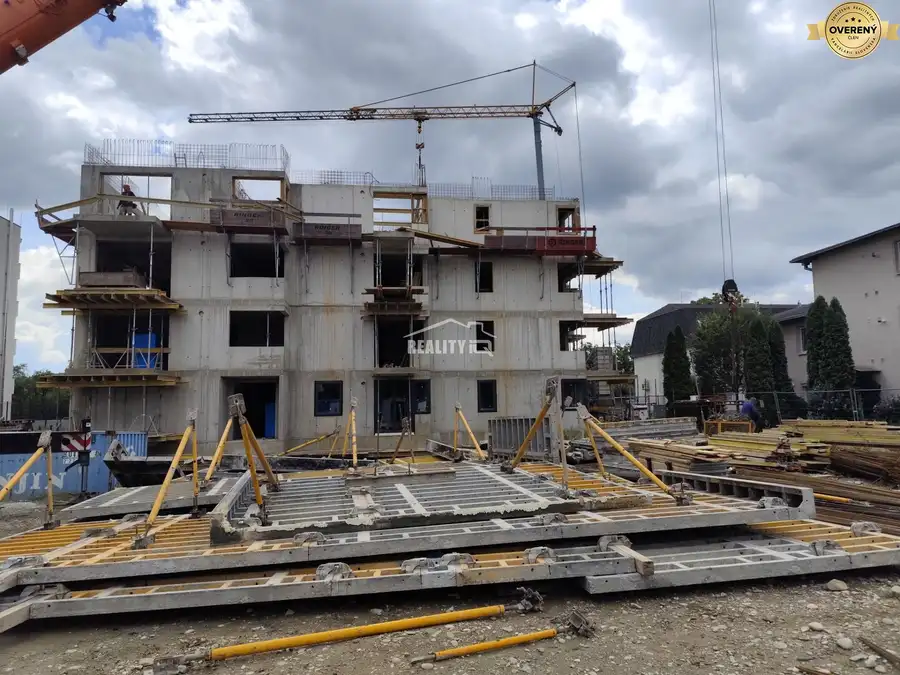
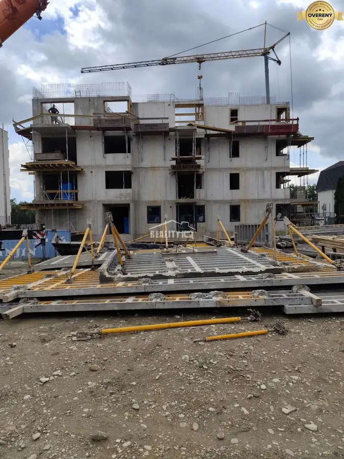

Predaj · Byt
Na predaj 1- izbový byt s výmerou 44,73 m2 v novostavbe Beluša.
Beluša
125 094 €2 797 € za m²


- Dispozícia1-izbový
- Plocha44.73 m²
- Stavholopriestor
- Vlastníctvofiremné
- Energetická triedaA
O nehnuteľnosti
Ponúkame na predaj 1- izbový byt s výmerou 44,73 m2, balkónom 3,24 m2, a komorou 3,7 m2 v novostavbe vo výstavbe v Beluši. Byt sa predáva v stave holobyt so spoločnou kotolňou, kúrenie radiátormi, okná bytu plastové. Súčasťou novostavby je výťah zo suterénu. Hrubá stavba bude hotová 3/2027, kolaudácia na jeseň 2028. Cena bytu F na 4. N.P. je 125.094,-€. K bytu je potrebné dokúpiť vnútorné parkovacie miesto v sume 15.375,-€. Bližšie informácie na tel. čísle: . V Beluši sa nachádza všetka občianska vybavenosť s výbornou dostupnosťou na diaľnicu. Poradíme pri financovaní prostredníctvom hypotéky. do konca septembra v Prima banke zvýhodnená úroková sadzba s úrokom 3%.
Parametre
- Celková rozloha
- 48.43 m²
- Úžitková plocha
- 44.73 m²
- Poschodie
- vyššie poschodie
- Počet poschodí
- 5
- Vlastníctvo
- firemné
- Stav
- holopriestor
- Status
- aktívne
- Odvoz odpadu
- áno
- Plyn
- áno
- Internet
- lokálny poskytovateľ
- Kúpeľňa
- áno
- Vykurovanie
- spoločné – vlastná kotolňa
- Balkón
- áno
- Lódžia
- nie
- Terasa
- nie
- Pivnica
- áno
- Garáž
- áno - 1 auto
- Výťah
- áno
- Postavené z
- Zmiešané
- Zariadenie
- nezariadený
- Zateplený objekt
- áno
- Krb
- nie
- Klimatizácia
- nie
- Káblová televízia
- áno
- Energetický certifikát
- A
- Predzáhradka
- nie
- Bezbariérový prístup
- áno
- Okná
- plastové
- Orientácia
- juhozápadná
- Pripravené na výstavbu
- vydané stavebné povolenie
- Novostavba
- áno
- Dátum zverejnenia
- 2026-08-27
Kde to je
Ďalšie ponuky
Celá ponuka